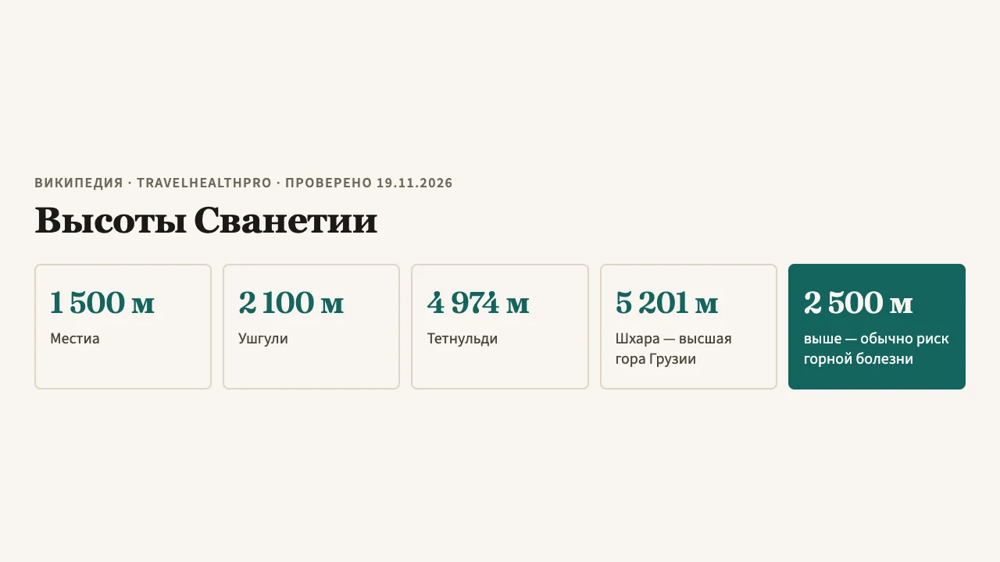
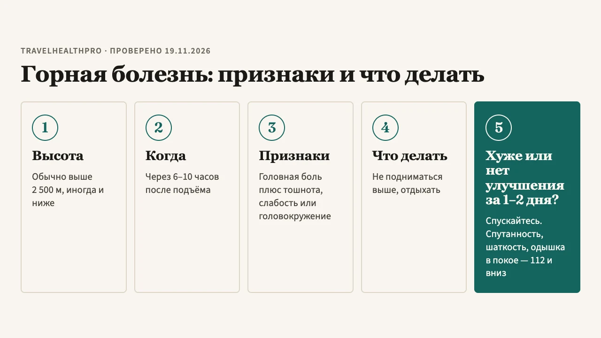

- Местиа
- 1 500 м
- Ушгули
- 2 100 м
- Шхара
- 5 201 м
- ЮНЕСКО
- с 1996
- Скорая
- 112
Статья входит в справочник о медицине в Грузии.
Что посмотреть в Сванетии
Главное — городок Местиа, община Ушгули и горы вокруг: Шхара, Тетнульди, Ушба. Ниже — коротко о каждом месте и о башнях.

Местиа
Это маленький городок на высоте 1 500 м: по переписи 2014 года здесь жили 1 973 человека. В поиске название часто пишут как «Местия».
Несмотря на размер, городок веками был важным центром грузинской культуры, пишет английская Википедия (на английском). Его средневековые памятники — церкви и крепости — входят в список Всемирного наследия ЮНЕСКО.
Курорты Тетнульди и Хацвали МВД Грузии называет вместе с Местиа в сообщении 2021 года.
Ушгули
Это не одно село, а община из пяти средневековых сёл в верховьях Ингури. Она стоит на высоте около 2 100 м, у подножия Шхары.
По данным Википедии (на английском), это одно из самых высокогорных постоянно обитаемых поселений в Европе.

В селе Жибиани на холме стоит церковь Ламария, построенная в XII веке.
Верхняя Сванетия, куда входит и эта община, с 1996 года в списке Всемирного наследия ЮНЕСКО. Сайт ЮНЕСКО при проверке не открылся, поэтому статус даём по Википедии — это вторичный источник.
Наш совет. Община лежит на 600 м выше городка. Поднялись сюда в первый же день в горах — вечером прислушайтесь к себе: признаки горной болезни появляются не сразу.
Сванские башни
Это средневековые памятники — жилые дома-башни. Википедия называет их главной чертой сёл Ушгули.
По той же Википедии, община до наших дней сохранила средневековый облик потому, что до неё трудно добраться. За сохранность и традиционную архитектуру её вместе с городком и округой признали объектом ЮНЕСКО.
Когда построен каждый такой дом и какие о нём ходят легенды, мы не пишем: проверенных данных у нас нет. Об этом лучше спросить на месте.
Горы: Шхара, Тетнульди и Ушба
Шхара — высшая гора Грузии, 5 201 м. Тетнульди поднимается на 4 974 м, Ушба — на 4 710 м. Так пишет Википедия о Сванетии (на английском).
Вокруг — пики от 3 000 до 5 000 м. Википедия называет этот край самой высокогорной обитаемой областью Кавказа.

Наш совет. Стройте маршрут снизу вверх: сначала городок, потом община, и только после этого — походы к вершинам. TravelHealthPro советует подниматься постепенно, с днями отдыха.
Как добраться до Местии
Есть два пути: по дороге или самолётом до аэропорта Королевы Тамары. Городок лежит примерно в 128 км к северо-востоку от Зугдиди, центра региона, — так пишет Википедия.
Аэропортом Королевы Тамары с 2010 года управляет государственная компания United Airports of Georgia. Какие авиакомпании туда летают и по какому расписанию, мы не пишем: проверенных данных нет, уточняйте перед поездкой.
Сколько ехать и сколько стоит доехать, официальные источники не сообщают. Поэтому ни времени в пути, ни цен здесь нет.
Если маршрут идёт через Кутаиси, пригодится наш путеводитель по Кутаиси.
Из Местии в Ушгули
Летом — по дороге, а зимой это получается не всегда. По Википедии, снег в общине лежит около 6 месяцев в году, и дорога туда часто непроезжая.
Даты, когда дорогу закрывают, и длину пешего маршрута мы не приводим: проверенных данных у нас нет.
Наш совет. Оставьте в плане запасной день — на случай, если снег закроет дорогу.
Горная болезнь в Сванетии
Риск есть, но обычно выше, чем стоят сёла. По данным британского сервиса TravelHealthPro (на английском), горная болезнь, как правило, начинается выше 2 500 м, а у чувствительных людей бывает и ниже.
Городок (1 500 м) и община (около 2 100 м) ниже этой отметки, вершины вокруг — намного выше. Высокогорьем TravelHealthPro считает всё, что выше 1 500 м.
GOV.UK (на английском) называет гору Тетнульди (не путайте с одноимённым курортом) среди мест Грузии, где есть риск горной болезни.
Ниже — пересказ памятки TravelHealthPro без доз лекарств: что и сколько принимать, решает врач.
Признаки: через 6–10 часов
Болезнь начинается не сразу по приезде, а обычно через 6–10 часов после подъёма. Главный признак — головная боль. Вместе с ней бывает хотя бы одно из:
- потеря аппетита, тошнота или рвота;
- головокружение;
- усталость или слабость.
Головная боль в горах бывает и сама по себе — от переутомления, обезвоживания или похмелья. Но любые новые жалобы после подъёма TravelHealthPro советует считать горной болезнью, пока не доказано обратное.
Что делать при горной болезни
Остановитесь и не поднимайтесь выше. TravelHealthPro советует:
- Не идти выше, пока признаки не прошли.
- Отдыхать. Обезболивающее, например ибупрофен или парацетамол, и средство от тошноты можно принять при необходимости.
- Спускаться, если стало хуже или за один-два дня не стало лучше.
- Не оставлять заболевшего одного.
Если не подниматься выше, обычная горная болезнь (без отёков) часто проходит за 1–3 дня.

Не оставляйте одного человека с горной болезнью, подчёркивает TravelHealthPro. Наш совет: это касается и гостиницы, даже ненадолго.
Тяжёлые формы: отёк мозга и отёк лёгких
Это угроза жизни: нужна срочная медпомощь и спуск ниже. Звоните 112 и начинайте спускаться.
Отёк мозга — спутанность и нарушение сознания, шаткость, потеря координации. Ему часто предшествуют обычные признаки горной болезни.
Отёк лёгких — сначала одышка при нагрузке и сухой кашель. Потом одышка в покое и лёжа, влажный кашель, мокрота с кровью, хрипы, стеснение в груди. Он бывает и без обычных признаков.
Обе формы редки ниже 2 800 м, пишет TravelHealthPro, но без помощи могут быстро привести к смерти.
Как подготовиться к высоте
Главная защита — подниматься постепенно и регулярно устраивать дни отдыха. Ещё два совета TravelHealthPro:
- с хроническими болезнями посоветуйтесь с врачом до поездки;
- полис на поездку в горы нужен обязательно: пусть он покрывает весь маршрут и занятия, и включает эвакуацию вертолётом; укажите страховщику максимальную высоту маршрута.
Хорошая спортивная форма от горной болезни, по-видимому, не защищает. Риск выше у тех, кто уже болел ею раньше, живёт ниже 900 м, много двигается сразу по приезде или страдает некоторыми болезнями сердца и сосудов. В походы TravelHealthPro советует ходить с опытным гидом.
Для здоровых детей подъём до 2 500 м считается низким риском. У детей симптомы обычно такие же, как у взрослых, но малыши могут не суметь рассказать, что им плохо. Наш совет: следите за ними сами.
Подробнее о высоте и о том, какие занятия полис может не покрывать, — в путеводителе по Гудаури.
Травма и спасатели в горах
Звоните 112, но будьте готовы, что помощь придёт не сразу. В походе, на лыжах и в экстремальном спорте экстренная помощь может быть ограничена, предупреждает GOV.UK (на английском).
Там же сказано: точные данные о горных условиях и лавинах получить трудно, а для экстремального спорта стоит взять специализированного гида. Ещё GOV.UK советует проверить, покрывает ли полис ваши занятия.
Правительство Канады (на английском) пишет, что в сельских районах Грузии не хватает медикаментов и персонала. Экстренные службы могут и вовсе не добраться до села.

Спасатели МВД на курортах
В 2021 году МВД Грузии сообщило (на английском), что на горнолыжных курортах работают лыжные патрули и горные спасатели. Среди курортов назван район Местии — Тетнульди и Хацвали.
Это сообщение 2021 года: как служба устроена сейчас, мы не знаем. В беде всё равно звоните 112.
Что сказать оператору 112
Наш совет. Начните с того, где вы: село, курорт, склон или ближайший заметный ориентир. Потом скажите, что случилось и сколько человек пострадало.
Где врач рядом с Местией
Срочно — 112. Если помощь нужна не срочно, ищите врача в Зугдиди, центре региона.
За пределами Тбилиси медпомощь ограничена, пишет GOV.UK (на английском). Платить за лечение придётся по факту — вам или страховщику.
Есть ли больница в Местии и как она называется, проверенных данных нет.
До Зугдиди отсюда примерно 128 км. Клиники и врачей этого города можно найти в каталоге врачей Зугдиди на 100doc.ge.
Правительство Канады (на английском) предупреждает: медпомощь в Грузии может стоить дорого, и оплату наличными часто просят сразу. Персонал может не говорить по-английски.
Для въезда в Грузию иностранцу нужен полис с покрытием не меньше 30 000 лари — подробнее в нашем разделе о полисе для въезда.
Частые вопросы
Как добраться до Местии?
По дороге или самолётом до аэропорта Королевы Тамары. Местиа — примерно в 128 км к северо-востоку от Зугдиди, центра региона.
Какая высота у Местии и Ушгули?
Городок стоит на высоте 1 500 м, община — около 2 100 м, по английской Википедии. Горная болезнь обычно начинается выше 2 500 м.
Бывает ли в Сванетии горная болезнь?
Да, особенно выше 2 500 м — в походах к вершинам. GOV.UK называет среди мест риска гору Тетнульди. Признаки — головная боль с тошнотой, головокружением или усталостью через 6–10 часов после подъёма.
Есть ли больница в Местии?
Проверенных данных о больнице в Местии нет. GOV.UK пишет, что вне Тбилиси медпомощь ограничена, Канада — что в сельских районах не хватает персонала. Срочно — 112, врача ищите в каталоге Зугдиди.
Можно ли попасть в Ушгули зимой?
Не всегда. По Википедии, снег здесь лежит около 6 месяцев в году, и дорога часто непроезжая. Оставьте в плане запасной день.
Какая гора в Сванетии самая высокая?
Шхара, 5 201 м, — высшая гора Грузии. Тетнульди — 4 974 м, Ушба — 4 710 м.
Нужен ли гид в горах?
Для экстремального спорта GOV.UK советует специализированных гидов: помощь в горах может быть ограничена, а точные данные о лавинах получить трудно.
Покрывает ли полис походы и лыжи?
Не всегда: GOV.UK советует до поездки проверить, покрывает ли полис ваши занятия. Подробнее — в нашем путеводителе по Гудаури.
Источники
- Википедия: Местиа — 1 500 м, 128 км от Зугдиди, аэропорт, ЮНЕСКО (на английском)
- Википедия: Ушгули — пять сёл, 2 100 м, Ламария, снег 6 месяцев, ЮНЕСКО с 1996 (на английском)
- Википедия: Сванетия — Шхара, Тетнульди, Ушба (на английском)
- TravelHealthPro: горная болезнь (на английском)
- GOV.UK: здоровье в Грузии — Тетнульди, медпомощь вне Тбилиси, 112 (на английском)
- GOV.UK: безопасность — походы, лыжи, гиды (на английском)
- Правительство Канады: советы для поездки в Грузию — медпомощь в сельских районах (на английском)
- МВД Грузии: патрули и спасатели на горнолыжных курортах, 2021 (на английском)
Это справочная информация, а не медицинская консультация: лечение назначает врач. Проверено 19 ноября 2026 года.